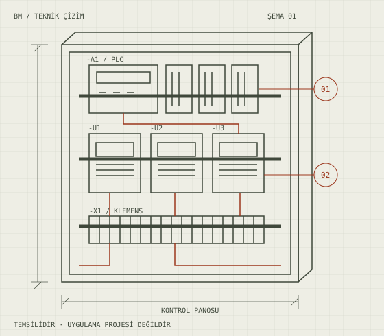

Mevcut sistem incelemesi
PLC modelini, saha I/O bağlantılarını, sürücüleri, emniyet ekipmanlarını ve varsa yazılım yedeğini tespit ederiz.
Mekanik olarak çalışabilir durumdaki bir makinede PLC, HMI veya sürücü eskidiğinde tüm makineyi değiştirmek gerekmeyebilir. Mevcut sistemi inceleyip hangi parçaların korunabileceğini, hangilerinin güncellenmesi gerektiğini teknik ve ekonomik açıdan değerlendiriyoruz.
Hizmet bölgesi: Eskişehir, Bursa, Bilecik ve Kütahya

Temsili teknik illüstrasyon; tamamlanmış proje fotoğrafı değildir.
Kapsamı baştan netleştirerek teknik riski ve sürpriz değişiklikleri azaltmayı hedefliyoruz.
PLC modelini, saha I/O bağlantılarını, sürücüleri, emniyet ekipmanlarını ve varsa yazılım yedeğini tespit ederiz.
Eski-yeni I/O eşlemesi, elektrik projeleri, program aktarımı ve üretim duruş planını hazırlarız.
Değişen donanım sonrası emniyet, haberleşme, manuel fonksiyon ve otomatik çevrimi sahada test ederiz.
Eski PLC'nin yeni bir modele çevrilmesi her zaman birebir program aktarımı değildir. Örneğin haberleşme modülleri, giriş-çıkış adresleri, sürücü telegramları, HMI etiketleri ve emniyet mimarisi değişebilir. Projeye başlamadan önce kapsamın netleştirilmesi beklenmedik duruşları ve maliyetleri azaltmaya yardımcı olur.
Çalışmalarımızı Eskişehir merkezimizden planlıyor; Bursa, Bilecik ve Kütahya için yerinde hizmet taleplerini proje kapsamına ve uygunluğa göre değerlendiriyoruz.
Projeye erişilemiyorsa saha I/O tespiti ve çalışma senaryosunun yeniden çıkarılması gerekebilir; bunun süresi makinenin karmaşıklığına bağlıdır.
Bu sayfanın kapsamı kontrol ve elektrik otomasyonu revizyonudur. Mekanik değişiklik ihtiyaçları ayrıca değerlendirilir.
Çoğu dönüşüm için planlı bir duruş gerekir. Süre ve geri dönüş yöntemi keşif sonrası belirlenir.